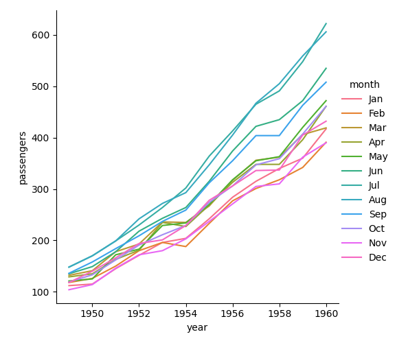
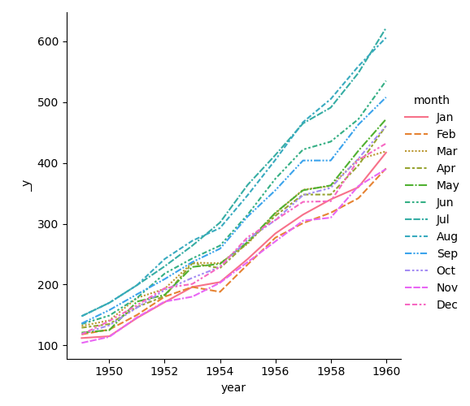

1 | import matplotlib.pyplot as plt |
长格式数据(Long-form data)
一个长格式数据的表格具有以下特征：
- 一列代表一个变量
- 一行代表一个观测结果(样本)
以航班(flights)数据集为例，它记录了从1949年到1960年每个月乘坐飞机的乘客数量。该数据集有三个变量(年、月和乘客数量):
1 | flights = sns.load_dataset("flights") |
对于长格式数据，通过将表中的列显式分配给一个变量，就可以为它们在图中赋予角色。
例如，制作每年乘客数量的月度图：1
2
3
4
5
6
7
8plot_long_form = sns.relplot(
data=flights,
x="year",
y="passengers",
hue="month",
kind="line"
)
plt.show()

宽格式数据(Wide-form data)
一些简单的数据集采用宽格式，列和行包含不同变量的级别。
通过“透视”的方式将航班数据集转换为宽格式：
1 | flights_wide = flights.pivot( |
1 | plot_wide_form = sns.relplot( |

这个图与上一个图看似相似，但有明显的不同。
Seaborn将DataFrame的索引year分配给x，将DataFrame的值分配给y，为每个月绘制了一条单独的线。
当数据集通过pivot操作将其从长格式转换为宽格式时，乘客数量(passengers)的含义信息就丢失了。
因此，图中没有y轴标签。(这些线在这里也有破折号，因为relplot()将列变量映射为颜色和样式语义，以便更容易访问plot。在长格式的情况下我们没有这样做，但是我们可以通过设置style=”month”来实现)。